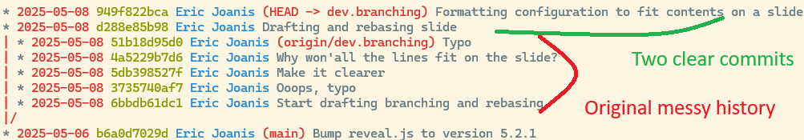

An opinionated
Git tutorial
by Eric Joanis
© 2025, National Research Council Canada
Motivation
In this tutorial, I hope you will learn to:
- get comfortable with Git
- use the command line (yes!)
- commit and rebase a lot
- not be afraid of making mistakes

© xkcd.com https://xkcd.com/1597/
The basics
You might want to:
- Get a local copy of a project.
- Make changes to it.
- Contribute these changes to the project.
- Retrieve changes others have made.
The basics
You might want to:
- Get a local copy of a project.
- Make changes to it.
- Contribute these changes to the project.
- Retrieve changes others have made.
git clone http://server/space/repo.git
Write and change code
git add <changed files>
git commit
git switch -c dev.myfeature
git push -u origin dev.myfeature
git fetch
git rebase
The basics
A Git repo is a graph:
gitGraph
commit
commit
branch dev.feature1
commit
commit
checkout main
commit
branch dev.bug-fix2
commit
checkout main
commit
merge dev.feature1
commit
The basics
A commit is a node in the graph with:
- one parent
- or several parents for a merge commit
- or no parents for the initial commit
- a complete snapshot of the code base
- metadata about who made the commit and when
Use a graph viewer
git log, orgit log --oneline --decorate --all

Use a graph viewer
Use a graph viewer
There are many Git graph viewers, pick one you like.
git log --graph --oneline --decorate --all-
tig --all,gitk --all,git-graph,serie, etc. -
My favourite alias:
git loga(output: see previous slide)
In my~/.gitconfig:[alias] logs = log --color --graph --date=short --date-order --format=logs loga = logs --all [log] abbrevCommit = true decorate = true [pretty] logs = %Cred%ad %Cgreen%h %Cblue%an%Cred%d %Creset%s
Use a graph viewer
On GitHub: Insights / Network
Use a graph viewer
On GitLab: Code / Repository Graph
Branching and rebasing
Branching is cheap
git switch -c dev.something
git add <files to add>
git commit -m "some commit"
git fetch
git rebase origin/main
git push --force-with-lease
Commit often, and clean up after
Your dev branches are yours!
Rewrite them even if you've already pushed them.
Commit a lot but clean up for the PR
git rebase --interactive main
Results:
Commit a lot but clean up for the PR
Git Organized: A Better Git Workflow
https://render.com/blog/git-organized-a-better-git-flow
TL;DR:
- Commit a lot
- reset with
git reset origin/main - Create new, logically-grouped commits
- Submit a beautiful PR that makes Eric happy!
Prefer fetch to pull
A common story:
- You (Joe Dev) start making changes and commit them.
- Eric pushes some commits to main — you merge them into your branch.
- You commit more changes.
- Eric pushes more commits to main — merge again!
- You complete your work and commit.
- Argh, that pesky Eric! — pull and merge once more.
- Submit your PR
Prefer fetch to pull
Three pulls and a merged PR ☹️
Prefer fetch to pull
Alternative story — repeat three times:
git commit- Eric pushes some changes
git fetchgit rebase origin/main
Prefer fetch to pull
And merge the PR ☺️
vsUnderstanding git pull
git pull is just a “convenient” combination of:
git fetchgit merge
git fetch is a network operation only: copy branches
on the remote into remote-tracking branches on your computer,
e.g., origin/main.
git merge merges those changes into your local
branch.
But is that really what you want?
Often, no: I usually prefer to rebase.
Understanding remote-tracking branches
Understanding the “upstream”
Each local branch can have an “upstream”.
E.g., by default main's upstream is
origin/main.
The upstream just sets some defaults:
git push |
→ push cur. branch to its upstream |
git fetch |
← fetch from the upstream's remote |
git merge |
↢ merge the remote-tracking copy of the upstream |
git pull |
← fetch and ↢ merge from the upstream |
Understanding the “upstream”
Useful commands to manipulate the upstream
-
Display the upstream information for all your branches.
git branch -v -v(yes, two -v's!) -
Set the upstream when you first push a branch.
git push -u origin dev.myfeature -
Set or reset the upstream for an existing branch
git branch -u origin/dev.myfeature dev.myfeature
Key takeaways
Find and use a graph viewer you like
Branches are cheap
Fetch and rebase, rather than pull
Rewrite your dev branches
Experiment!
Cheat sheet: branches
git switch -c new_branch
git checkout -b new_branch
|
Create a branch and switch to it |
git branch new_branch commitish |
Create a branch from a specific commit(ish) |
git switch some_branch
git checkout some_branch
|
Switch to a branch |
git push -u origin dev.feat |
First push of a branch |
git push origin dev.feat |
Push branch updates |
git push --force-with-lease origin dev.feat
|
Push after a rebase |
git branch -d old_branch
|
Delete a branch |
Cheat sheet: rewriting history
git fetch |
Get new commits from origin |
git rebase origin/main |
Rebase my current branch onto origin/main |
git rebase -i commitish |
Interactive rebase |
git cherry-pick commitish |
"Steal" one commit from another branch |